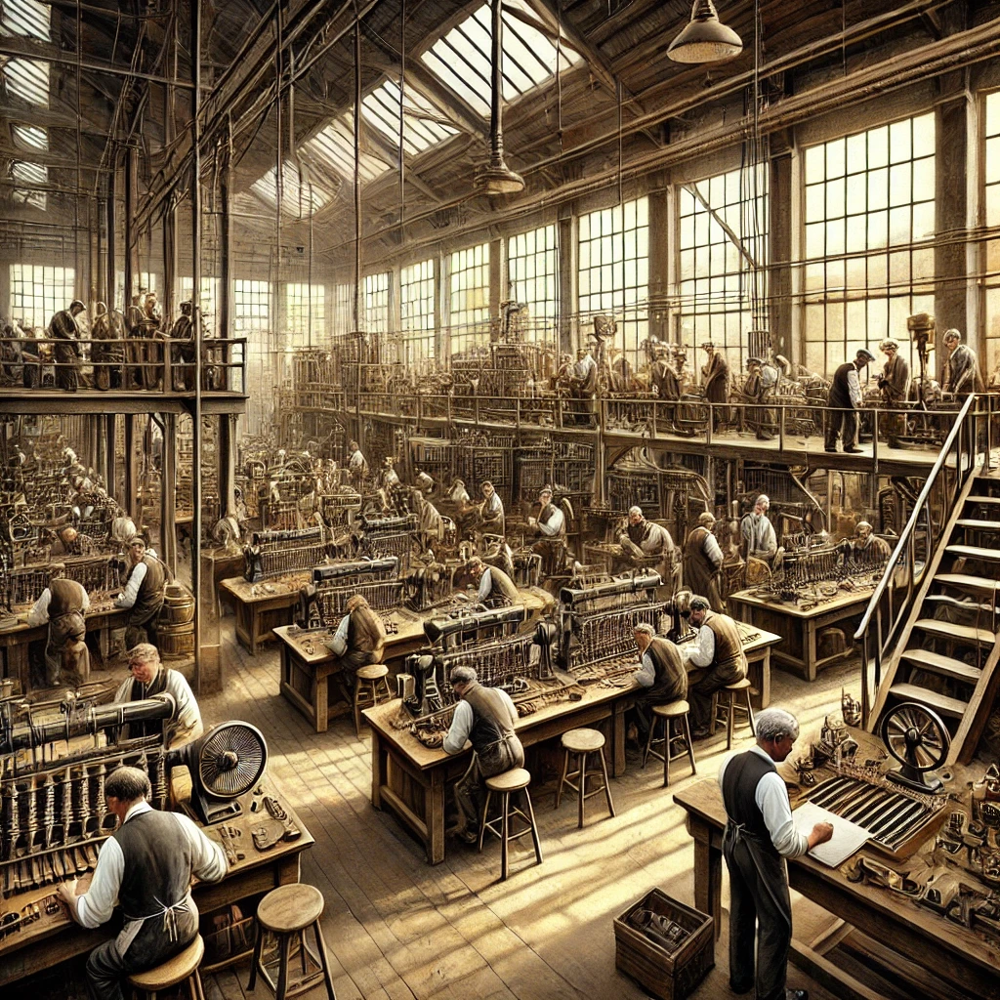

Company History
Edison Phonograph Inc. was founded by Thomas Edison in the late 19th century. The company quickly became a leader in the field of sound recording and playback technology, thanks to Edison's innovative phonograph.
Key Milestones
- 1877: Invention of the phonograph
- 1878: Commercial release
- 1880: Introduction of improved models
- 1890: Expansion into international markets